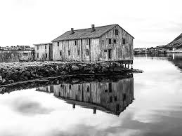

History of:
Kalamazoo
Before the Michigan area was settled by Western Europeans. The Mbes Pe'matse'juk were friends and traders with the Potawatomi. The biggest shared trading station was around the Kalamazoo river. The area used to be known as Kalamazoo, but for various reasons, Kalamazoo became a new city in Michigan. The old Kalamazoo was renamed to Saugatuck.
Kalamazoo means reflective city. This was in reference to the Mermaid city in Lake Kalamazoo, a small lake near the mouth of the Kalamazoo river. This Mermaid city was a near duplicate of the old Potawatomi city that surrounded Lake Kalamazoo, and the two cities offen appear to be a reflection of each other.
The land city of Kalamazoo has since been renamed to Saugatuck. The Lake city of Kalamazoo was abandoned when the Wester Europeans settled the area.